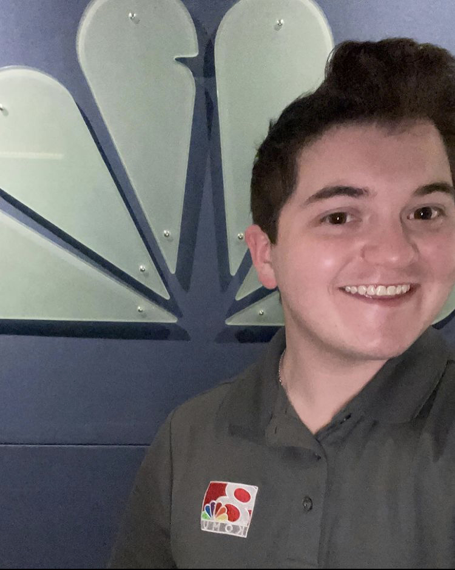
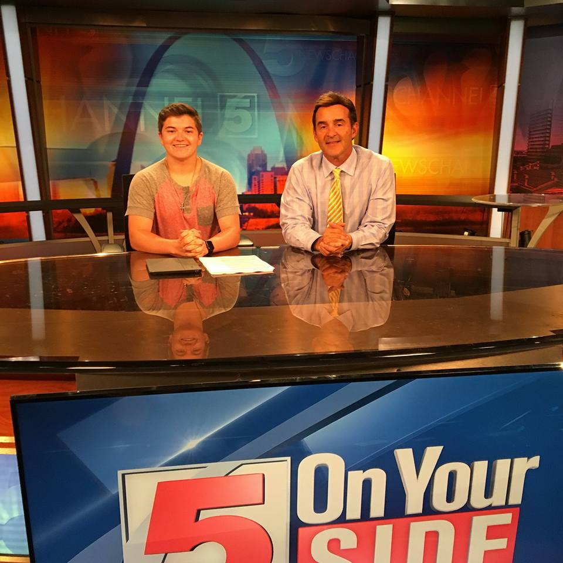

Welcome to my resume!
Below, you will find a link to my full resume, along with a few spotlights about myself and my skills!
My Full Resume
My work ethic: I find myself to be an extremely driven and productive worker.

I attended the University of Missouri-Columbia, and graduated with a Bachelor's Degree in Journalism-Sports Broadcast.

Some of my experiences include over 7 years of sports broadcasting, including the Missouri State Boy's High School
Championships for the last 3 years.
